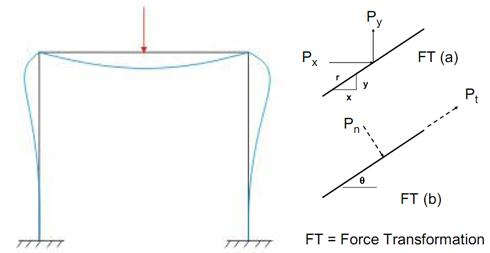

Portal frame construction is a method of building and designing simple structures, primarily using steel or steel-reinforced precast concrete although they can also be constructed using laminated timber such as glulam. The connections between the columns and the rafters are designed to be moment-resistant, i.e. they can carry bending forces.
Because of these very strong and rigid joints some of the bending moment in the rafters is transferred to the columns. This means that the size of the rafters can be reduced or the span can be increased for the same size rafters. This makes portal frames a very efficient construction technique to use for wide span buildings.
Portal frame construction is therefore typically seen in warehouses, barns and other places where large, open spaces are required at low cost and a pitched roof is acceptable.

Portal frames are frequently used over the entrance of a bridge and as a main stiffness element in building design in order to transfer horizontal forces applied at the top of the frame to the foundation. On bridges, these frames resist the forces caused by wind, earthquake, and unbalanced traffic loading on the bridge deck. Portals can be pin supported, fixed supported, or supported by partial fixity. The approximate analysis of each case will now be discussed for a simple three-member portal.


To know the shear force diagram and bending moment diagram for a given portal frame


Q1.
What is a portal frame?
Q2.
Give the examples where portal frames are used.
Q3.
What is the degree of freedom for a portal frame with fixed support?
Q4.
What are the types of connections in building frames?
Q5.
Portal frames can be pinned, hinged or may also be as fixed.
True
False
Q6.
The maximum bending moment is at the middle when u.d.l is applied for a fixed portal frame.
True
False